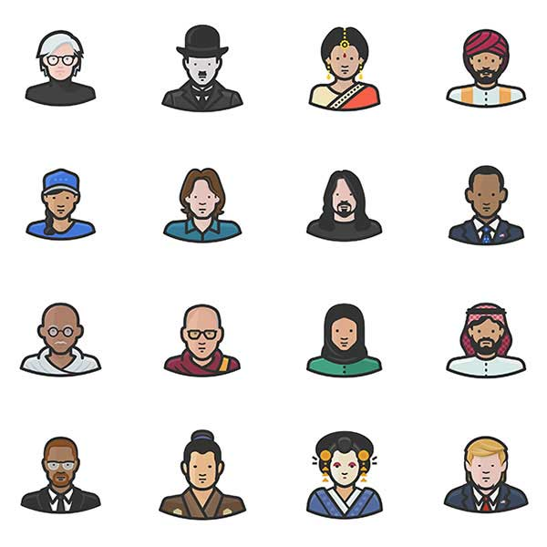

Menu
Bio
Portfolio
Resume
Contact
Copyright © All rights reserved | This template is made with
by
Colorlib
Portfolio

Topics regarding food, music, lifestyle and the arts.
DANAMIC
Articles regarding Culture and Beauty sections.
Buro 24/7
Faux Fur Fun
NYU.FASHION
Vintage Trends for On-Campus Wear
NYU.FASHION
Movie and food reviews.
Asia 361